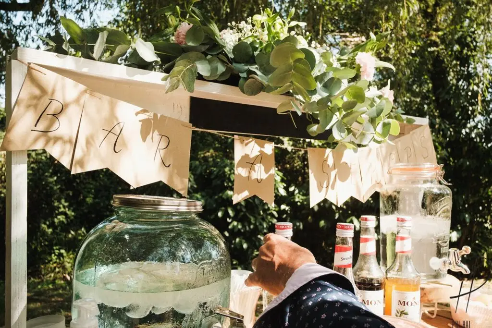
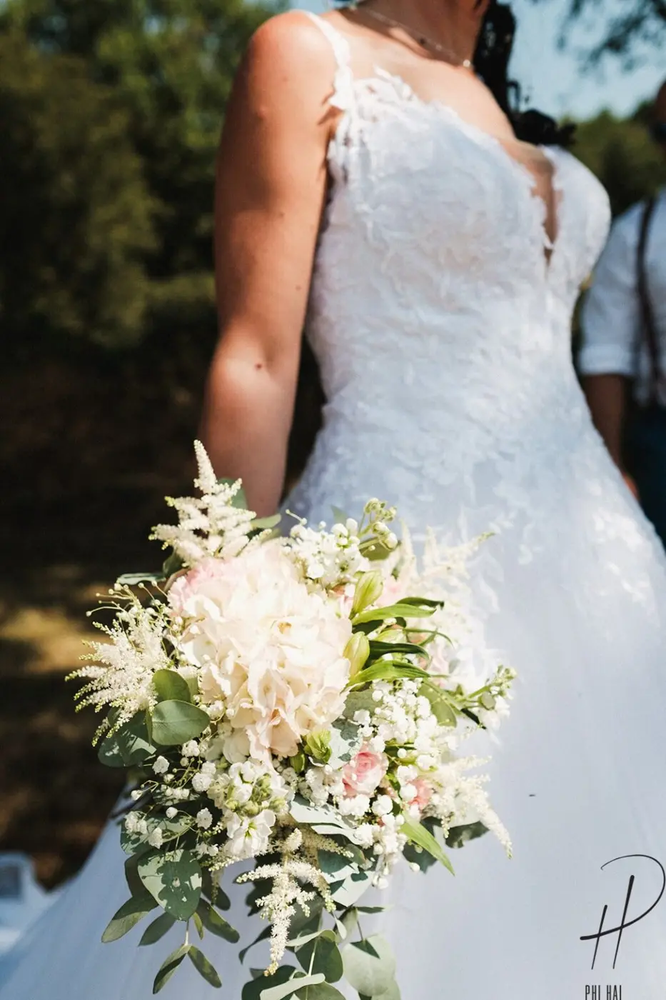
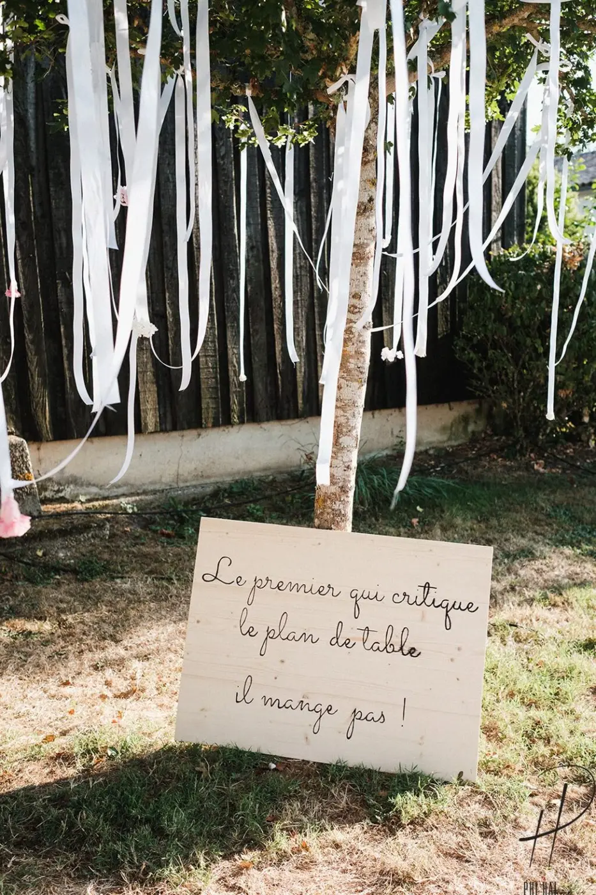
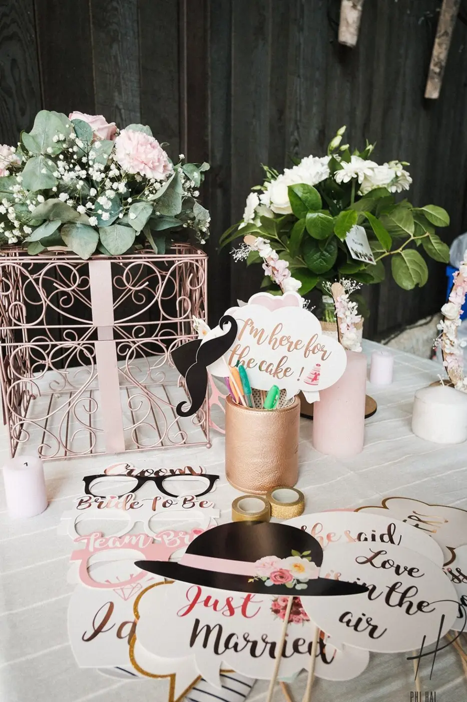
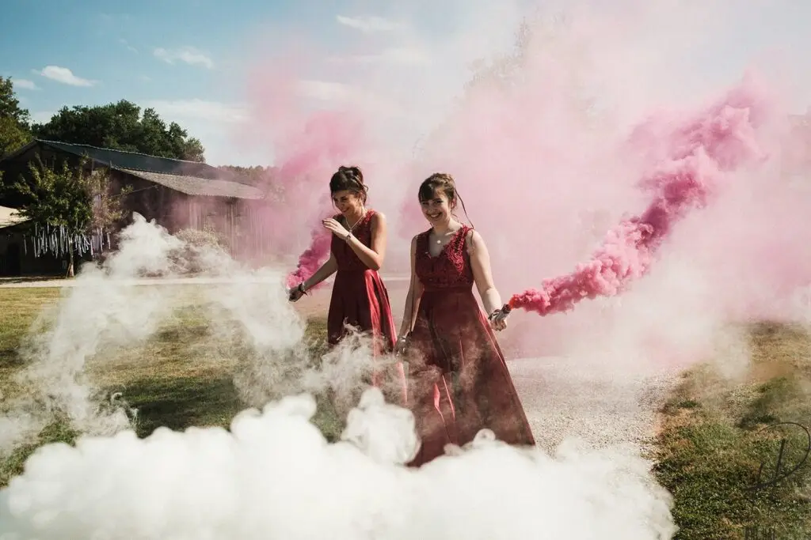

Understated, elegant decor
A country-themed wedding is very much in vogue for lovers of nature and simplicity in the Bordeaux region, and as a wedding planner, I can find you the best venues!

Natural materials come first in a country theme: linen, raffia, cotton and hessian, with a touch of lace for a chic note.
Pair them with an unusual venue in the Gironde, a château for example, where exposed brick and old beams beautifully set off vintage finds and natural flowers.

As you probably know, my work as a wedding planner and designer lets me support couples through every preparation: suppliers, entertainment, advice on traditions and new trends, decor with a personalised set design and help managing guests. That's how this couple could truly enjoy their wedding and, above all, their guests.
The finishing touch was the garden, transformed into a cosy space. What a joy to raise a glass at the drinks reception in the heart of the Bordeaux vineyards!






Lovely Day Event offers several services
Wedding planning
I step in at every stage of your preparations and guide you through your choices, bringing ideas and suggestions so that your wedding looks like no one but you.
Wedding design
Creative and passionate, I am a certified Wedding Designer and I create a scenographic atmosphere that matches the theme of your wedding.
On-the-day coordination
I will be the conductor of your day, managing the suppliers, the set-up of your decor and the smooth running of this beautiful day.